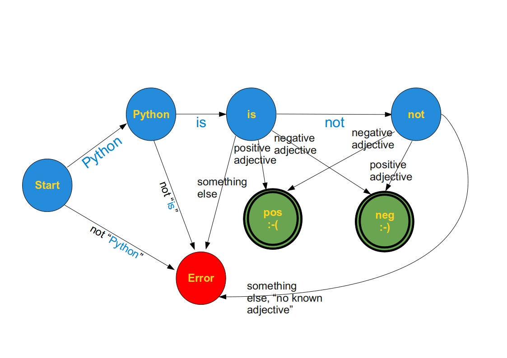

Finite State Machine (FSM)
A "Finite State Machine" (abbreviated FSM), also called "State Machine" or "Finite State Automaton"
is an abstract machine which consists of a set of states (including the initial state and one or more
end states), a set of input events, a set of output events, and a state transition function.
A transition function takes the current state and an input event as an input and returns
the new set of output events and the next (new) state.
Some of the states are used as "terminal states".
The operation of an FSM begins with a special state, called the start state, proceeds through transitions
depending on input to different states and normally ends in terminal or end states. A state which marks a
successful flow of operation is known as an accept state.
Mathematical Model:
A deterministic finite state machine or acceptor deterministic finite state machine is a quintuple
(Σ,S,s0,δ,F),
where:
Σ is the input alphabet (a finite, non-empty set of symbols).
S is a finite, non-empty set of states.
s0 is an initial state, an element of S.
δ is the state-transition function: δ : S x Σ → S
(in a nondeterministic finite state machine it
would be δ : S x Σ → ℘(S), i.e., δ would return
a set of states). (℘(S) is the Power set of S)
F is the set of final states, a (possibly empty) subset of S.
A Simple Example
We want to recognize the meaning of very small sentences with an extremely limited vocabulary and syntax:
These sentences should start with "Python is" followed by
- an adjective or
- the word "not" followed by an adjective.
"Python is great" → positive meaning
"Python is stupid" → negative meaning
"Python is not ugly" → positive meaning

A Finite State Machine in Python
To implement the previous example, we program first a general Finite State Machine in Python. We save this class as statemachine.py:
class StateMachine:
def __init__(self):
self.handlers = {}
self.startState = None
self.endStates = []
def add_state(self, name, handler, end_state=0):
name = name.upper()
self.handlers[name] = handler
if end_state:
self.endStates.append(name)
def set_start(self, name):
self.startState = name.upper()
def run(self, cargo):
try:
handler = self.handlers[self.startState]
except:
raise InitializationError("must call .set_start() before .run()")
if not self.endStates:
raise InitializationError("at least one state must be an end_state")
while True:
(newState, cargo) = handler(cargo)
if newState.upper() in self.endStates:
print("reached ", newState)
break
else:
handler = self.handlers[newState.upper()]
This general FSM is used in the next program:
from statemachine import StateMachine
positive_adjectives = ["great","super", "fun", "entertaining", "easy"]
negative_adjectives = ["boring", "difficult", "ugly", "bad"]
def start_transitions(txt):
splitted_txt = txt.split(None,1)
word, txt = splitted_txt if len(splitted_txt) > 1 else (txt,"")
if word == "Python":
newState = "Python_state"
else:
newState = "error_state"
return (newState, txt)
def python_state_transitions(txt):
splitted_txt = txt.split(None,1)
word, txt = splitted_txt if len(splitted_txt) > 1 else (txt,"")
if word == "is":
newState = "is_state"
else:
newState = "error_state"
return (newState, txt)
def is_state_transitions(txt):
splitted_txt = txt.split(None,1)
word, txt = splitted_txt if len(splitted_txt) > 1 else (txt,"")
if word == "not":
newState = "not_state"
elif word in positive_adjectives:
newState = "pos_state"
elif word in negative_adjectives:
newState = "neg_state"
else:
newState = "error_state"
return (newState, txt)
def not_state_transitions(txt):
splitted_txt = txt.split(None,1)
word, txt = splitted_txt if len(splitted_txt) > 1 else (txt,"")
if word in positive_adjectives:
newState = "neg_state"
elif word in negative_adjectives:
newState = "pos_state"
else:
newState = "error_state"
return (newState, txt)
def neg_state(txt):
print("Hallo")
return ("neg_state", "")
if __name__== "__main__":
m = StateMachine()
m.add_state("Start", start_transitions)
m.add_state("Python_state", python_state_transitions)
m.add_state("is_state", is_state_transitions)
m.add_state("not_state", not_state_transitions)
m.add_state("neg_state", None, end_state=1)
m.add_state("pos_state", None, end_state=1)
m.add_state("error_state", None, end_state=1)
m.set_start("Start")
m.run("Python is great")
m.run("Python is difficult")
m.run("Perl is ugly")
If we save the application of our general Finite State Machine in statemachine_test.py and
call it with python statemachine_test.pywe get the following results:
$ python statemachine_test.py reached pos_state which is an end state reached neg_state which is an end state reached error_state which is an end stateThe code of the finite state machine is compatible with Python3 as well!